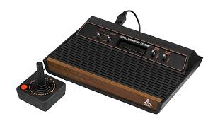

Gael Polanco
Hace tiempo que la industria de los videojuegos perdió la inocencia. Hoy es un sector maduro y admirado por su músculo tecnológico, su capacidad innovadora y su visión empresarial privilegiada. Los números no engañan: cerró 2022 con unos ingresos globales de más de 180.000 millones de dólares y una previsión de que este número supere los 200.000 millones en 2025, según la compañía de inteligencia de mercado Newzoo.
Con estas cifras es normal que los videojuegos dominen el ocio audiovisual, muy por delante de la música y el cine. Ni siquiera Hollywood ha podido con un rival que cuenta con 3.200 millones de jugadores en el mundo y, en concreto, éxitos como Fortnite con más de 230 millones de usuarios activos mensuales. La fiebre por este videojuego traspasa fronteras y ya inquieta a un gigante como Netflix más que Disney y HBO, sus competidores directos en la batalla por liderar los contenidos audiovisuales en streaming.
Durante bastante tiempo ha sido complicado señalar cual fue el primer videojuego, principalmente debido a las múltiples definiciones de este que se han ido estableciendo, pero se puede considerar como primer videojuego el Nought and crosses, también llamado OXO, desarrollado por Alexander S.Douglas en 1952. El juego era una versión computerizada del tres en raya que se ejecutaba sobre la EDSAC y permitía enfrentar a un jugador humano contra la máquina.En 1958 William Higginbotham creó, sirviéndose de un programa para el cálculo de trayectorias y un osciloscopio, Tennis for Two (tenis para dos): un simulador de tenis de mesa para entretenimiento de los visitantes de la exposición Brookhaven National Laboratory. Este videojuego fue el primero en permitir el juego entre dos jugadores humanos. Cuatro años más tarde Steve Russell, un estudiante del Instituto de Tecnología de Massachussets, dedicó seis meses a crear un juego para computadora usando gráficos vectoriales: Spacewar.
| PRIMERAS CONSOLAS | ||||
|---|---|---|---|---|
|  | ||||
 |
 |
 |
 |